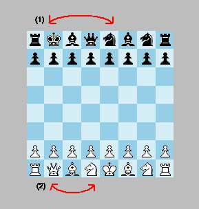
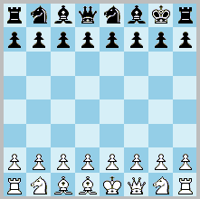

Abstract
The relocation method allows the players optionally to relocate either the king or queen before the play begins,
whilst retaining the castling rights. The players can forgo this if they prefer the standard setup. The method
enhances opening ramification without recourse to randomization. It allows players to remain in control. The
resultant positions deviate marginally from the standard position and would be experienced as strategically sound by
most chessplayers.
Introduction
Relocation Chess is like standard chess except that the players can, before play begins, swap places of the
king/queen and another piece except the rooks. Thus, if the king is swapped (relocated), the other piece (the
relocatee) ends up on the king’s square. If the queen is swapped, the relocatee ends up on the
queen’s square. One restriction is that the bishops mustn’t end up on the same square colour. Note that
black begins by making the initial swap. Alternatively he can choose to leave the position as it is. The white player
then has the option to relocate his king or queen, whereupon he starts the game by making the first move. This is the
simplest of my proposed relocation methods in that it only needs two half-moves to execute. Nevertheless, it can
produce 64 different positions. Of these are 8 mirrored and 56 non-mirrored.
Note that the king retains his castling rights even if it has been relocated. The castling rules are simple and
derive from Chess960. King and rook end up on their usual squares. The only difference is that the king can make
longer (or shorter, or none at all) leaps than usual. All squares between king and rook must be empty, and all
squares between the king and its landing square must be unthreatened. Neither of the pieces must have moved before.
Castle on the queeside is denoted O-O-O. Castle on the kingside is denoted O-O.
Curtailed castling: as an alternative rule, the king may retain its castling right only if it is placed on any
of the four central files. In other words, if the king is positioned on the g or b file, the castling right is
forfeited. After all, such a safety move brings certain advantages so it should cost something. This restrictive rule
would also enhance strategical predictability.
Click this button to open a Relocation Chess analysis board that can randomly create the 64
positions:
Discussion
Regrouping is a natural feature of warfare, and that is why it belongs in chess as well. Before his battle against
Pompey, Julius Caesar redeployed forces behind his lines. The maneuver proved essential, enabling him to counter
a cavalry attack on his right flank and ultimately secure victory. By analogy, I want to make a case for alternative
piece setups. They can stimulate creativity in chess and, at the very least, provide valuable training opportunities.
In this age of computer-driven opening preparation, chess journalists should seriously engage with the idea.
Under these relocation rules, the rooks remain on their natural squares, while the bishops are always placed so that
players retain the option of developing them on either the queenside or the kingside. This preserves the strategic
ambiguity of the starting position while generating sound and balanced setups from which neither side can derive a
decisive advantage. Black relocates first, giving White the opportunity to make a strategic choice that best suits
his intentions and thereby gain the initiative, as in orthodox chess. While the generated positions constitute a
subset of Fischer Random configurations, the players need not adopt the same setup. The most conservative option is
arguably to swap the king and queen, a simple yet effective way of escaping the burden of opening theory.
Importantly, the final castling positions are always the same as in standard chess.
An intriguing feature of the system is that it generates exactly sixty-four possible positions, corresponding to the
sixty-four squares of the chessboard. Of these, only eight occur as mirrored pairs. Arguably, this method of
reconfiguring the initial array makes the randomization procedure itself redundant (cf. Fischer Random Chess). It satisfies the player’s
preference for retaining a degree of control over the starting position. Black may select a relocation that modestly
strengthens his prospects against particular opening systems, such as those beginning with 1.e4. White, in turn, can
adapt by attempting to anticipate Black’s intentions, including his likely castling direction. This strategic
assessment may influence White’s choice of queen placement.
The orthodox starting position is both active and strategically ambiguous, qualities that often favour White. Yet
from Black’s standpoint it is not necessarily the most secure defensive formation. Because White is granted the
final move in determining the setup, he retains a slight possibility of preserving the traditional first-move
advantage. This advantage should be maintained, as it contributes significantly to the strategic tension of the
game.

Black has relocated the king to g8 and the relocatee to e8. White has relocated the queen to f1, and the relocatee is thus placed on d1. Black can later castle short by moving the rook to f8, or castle long by moving the king to c8, as usual. Paradoxically, despite the many pieces in between, the likelihood of long castle is greater. Thanks to the king’s protected position, the player can wait a longer time before deciding on which side to castle. Now white starts the game.
Randomization
The randomized version of Relocation Chess (Relocation Random Chess) implies that the initial position of each
side is independently randomized according to the above rules of king/queen relocation. It is supported in the
program. It is also called Chess64 as there are 64 possible board positions. It is comparable to Fischer
Random Chess (Chess960, Freestyle Chess). Alternatively, as suggested by M. Rosenkranz, the players can write down their
relocation moves secretly, and then disclose it before play begins. This is a form of semi-randomization. Relocation
Chess is designed to overcome the problem of opening monotony.
☛ You can download my free Relocation Chess program here (updated 2020-10-19), but you must own the software Zillions of Games to be able to run it (I recommend the download version).
☛ See also related variants in my article about Relocation
variants.
☛ You can play Relocation Chess online or by email here.
☛ You can play Chess64 (i.e. the randomized version) online or by email here. (This also
functions as a Chess64 position generator.)
☛ Don’t miss my other chess variants.
© Mats Winther, 2009 April